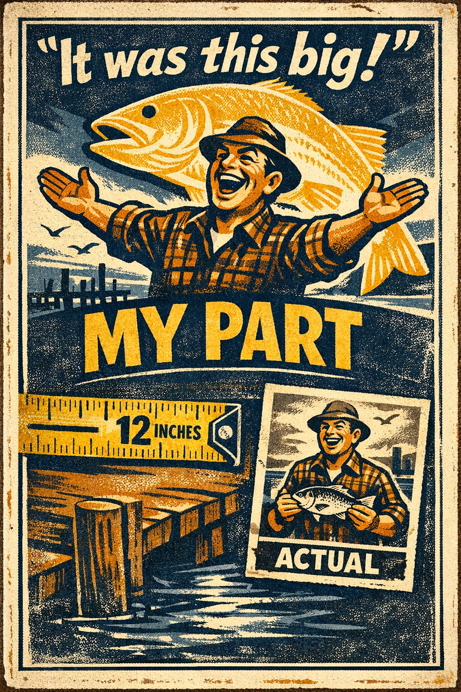
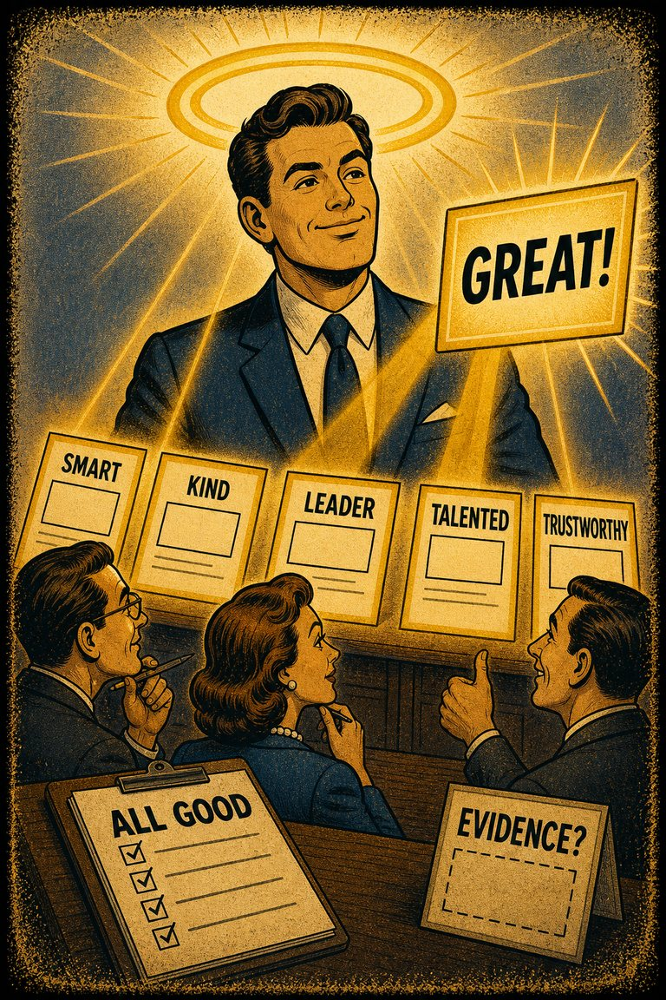

Egocentric bias
The tendency to remember the past in self-serving ways and overweight one's own perspective.
Causal AttributionSelf-Perspective

Cognitive Biases
A practical cognitive-bias site with clear definitions, learning paths, assessments, self-audits, and debiasing tools.
Learning Path
A path for social perception, hiring, leadership, conflict, and the fast trait inferences people make about one another.
Work the pages in order, then loop back and compare which distortions happened earliest, which ones protected the first impression, and which ones interfered with later learning.
Next:
This is a deliberate sequence, not just a themed pile. Start at the top if the context is new to you.

The tendency to remember the past in self-serving ways and overweight one's own perspective.

The tendency to explain other people's behavior too quickly in terms of character while underweighting situational pressures and constraints.

The tendency for one salient positive or negative impression to spill over into unrelated judgments about a person, product, or institution.

The underlying attitudes and stereotypes that people unconsciously attribute to another person or group of people that affect how they understand and engage with them.

The tendency to notice, seek, and remember evidence that supports the story you already prefer more readily than evidence that threatens it.

The tendency to give bad news, threats, criticism, and losses more psychological weight than equally sized positives.